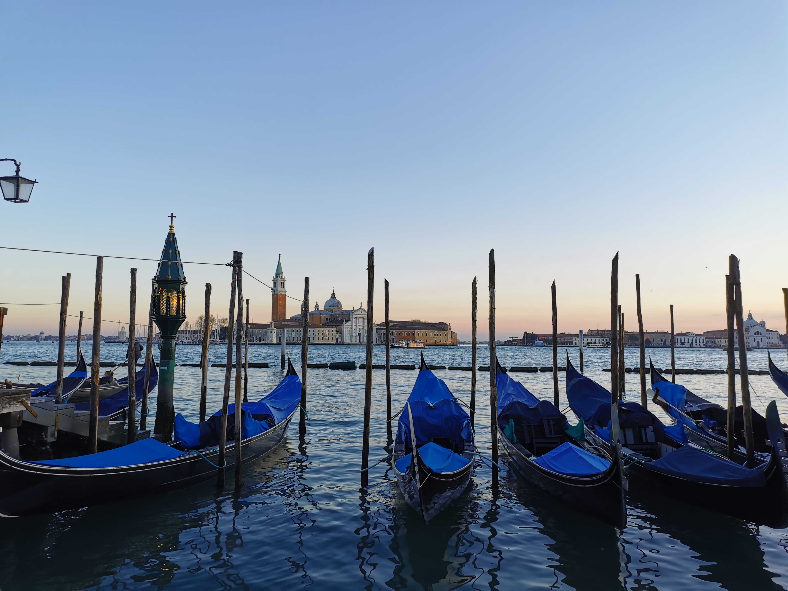
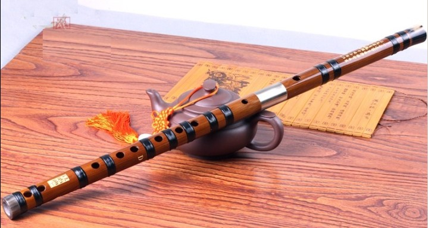

My favorite city
VENICE

About venice
Venice, Italian Venezia, city, major seaport, and capital of both the provincia (province) of Venezia and the regione (region) of Veneto, northern Italy. An island city, it was once the centre of a maritime republic. It was the greatest seaport in late medieval Europe and the continent’s commercial and cultural link to Asia. Venice is unique environmentally, architecturally, and historically, and in its days as a republic the city was styled la serenissima (“the most serene” or “sublime”). It remains a major Italian port in the northern Adriatic Sea and is one of the world’s oldest tourist and cultural centres.
Know moreMy favorite musical instrument
Dizi (bamboo flute)

About Dizi
Most dizi are made of bamboo, which explains why dizi are sometimes known by simple names such as Chinese bamboo flute. However, "bamboo" is perhaps more of a Chinese instrument classification like "woodwind" in the West. Northern Chinese dizi are made from purple or violet bamboo, while dizi made in Suzhou and Hangzhou are made from white bamboo. Dizi produced in southern Chinese regions such as Chaozhou are often made of very slender, lightweight, light-colored bamboo and are much quieter in tone.
Know more